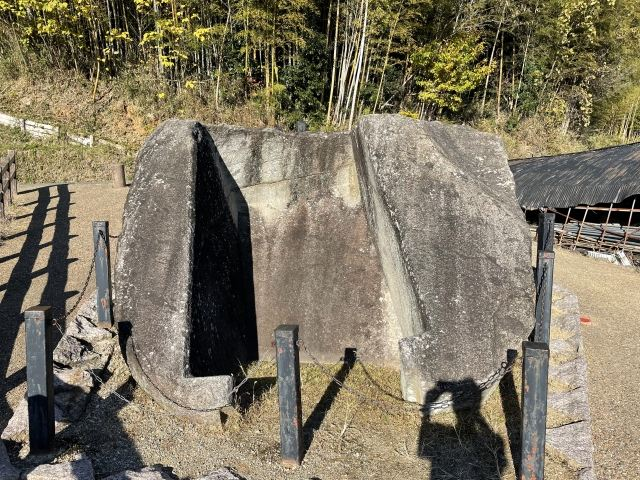
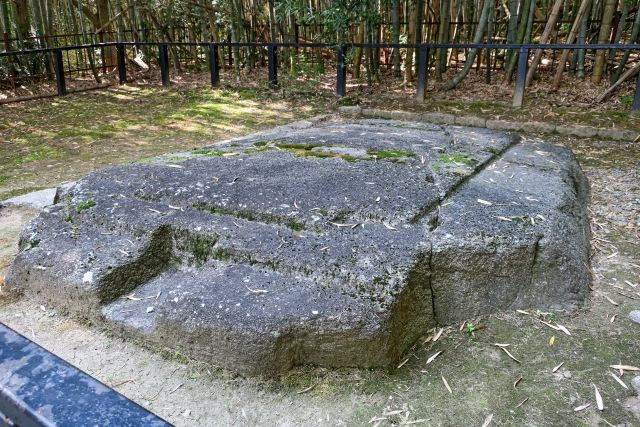

巨大な石造遺構
長さ約4メートルの巨大な石材が残り、古代の石室構造を感じることができます。

鬼の俎（おにのまないた）・鬼の雪隠（おにのせっちん）は、明日香村野口に残る巨大な石造物です。 もともとは古墳の石室を構成していた石材と考えられており、鬼が旅人を捕らえて料理したという伝説から、この名前で呼ばれています。 飛鳥ならではの謎と伝説を感じられる歴史スポットです。
| 見学時間 | 自由見学 |
|---|---|
| 定休日 | なし |
| 料金 | 無料 |
| 所要時間 | 約10分 |
| 駐車場 |
野口駐車場
（徒歩約8分・普通車 500円） 高松塚駐車場 （徒歩約10分・普通車 500円） |
| アクセス |
近鉄飛鳥駅から徒歩約12分。 周辺には猿石や高松塚古墳などの史跡があり、合わせて散策できます。 |
| 地図 | 地図はこちら |

長さ約4メートルの巨大な石材が残り、古代の石室構造を感じることができます。

鬼が旅人を料理したという伝説が残り、独特な名前と姿が印象に残るスポットです。
鬼の俎と鬼の雪隠は、もともと古墳の石室を構成していた石材と考えられています。 上にあった石室の天井石が「鬼の俎」、くり抜かれた石室の一部が「鬼の雪隠」と呼ばれています。 古墳の被葬者については諸説ありますが、飛鳥時代の終末期古墳を知る貴重な遺構です。